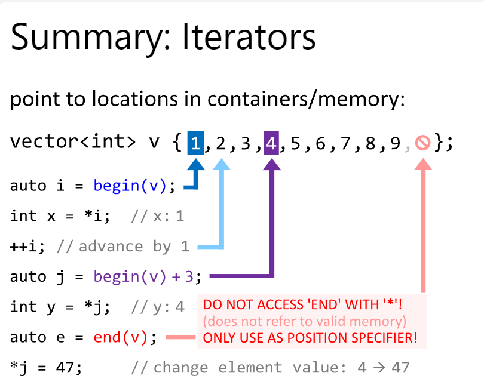

Iterator的用法
概念
迭代器是 C++ 中的一个抽象概念，用于顺序访问容器（如数组、列表、向量等）中的元素。迭代器提供类似于指针的接口，但它们并不总是指针。
关键点
行为类似于指针 ：迭代器支持解引用（
*）和指针运算（如++）。抽象层级 ：迭代器隐藏了容器的内部结构，提供统一的访问接口。
类型多样 ：C++ 标准库提供了多种迭代器类型，例如输入迭代器、双向迭代器等。
使用方法
要访问迭代器指向的元素值，需要使用解引用操作：
std::vector<int> v = {1, 2, 3};
it = v.begin(); // 迭代器指向 vector 的第一个元素
std::cout << *it << std::endl; // 打印迭代器指向的元素的值
++it; // 移动到下一个元素
std::cout << *it << std::endl; // 打印新位置的元素的值
Forward Direction
✅ works for all standard sequence containers
🔴 out-of-bounds access bugs possible
🔴 verbose
std::vector<int> v {1, 2, 3, 4, 5, 6};
for (auto i = begin(v); i != end(v); ++i) { cout << *i; }
Reverse Direction
✅ works for all bidirectional containers
🔴 out-of-bounds access bugs possible
🔴 verbose
std::vector<int> v {1, 2, 3, 4, 5, 6};
for (auto i = rbegin(v); i != rend(v); ++i) { cout << *i; }
Algorithm Example
include <iostream>
#include <vector>
void swap_adjacent_pairs (std::vector<int>& v) {
if (v.size() < 2) return;
for (auto i=begin(v), j=i+1, e=end(v); j < e; i+=2, j+=2) {
std::swap(*i,*j);
}
}
int main() {
std::vector<int> v {1,2,3,4,5,6};
swap_adjacent_pairs(v);
for (int x : v) { std::cout << x << ' '; }
std::cout << '\n';
}
|--> {1, 2, 3, 4, 5, 6} -> {2, 1, 4, 3, 6, 5}
注意事项
直接打印迭代器（如
std::cout << it;）通常会导致编译错误，因为大多数迭代器没有定义与输出流兼容的输出操作。迭代器的内部表示和状态通常是不透明的，除非深入了解特定容器的迭代器实现。
解引用迭代器（
*it）可以访问其指向的元素，但不能直接了解迭代器本身的具体内容。
Last modified: 11 十二月 2023